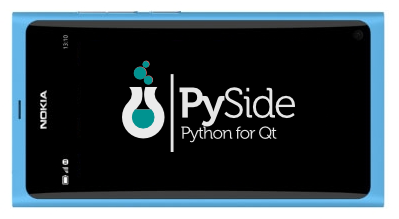
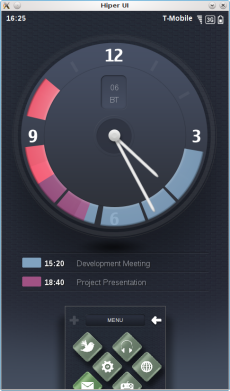
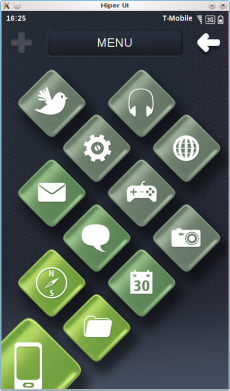
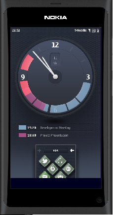
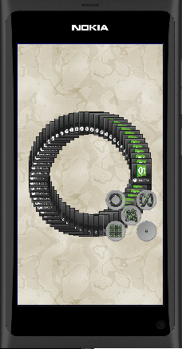
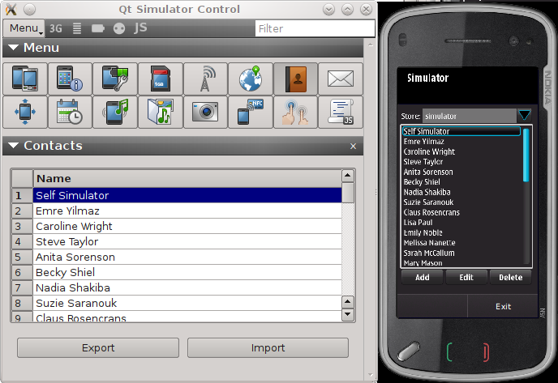
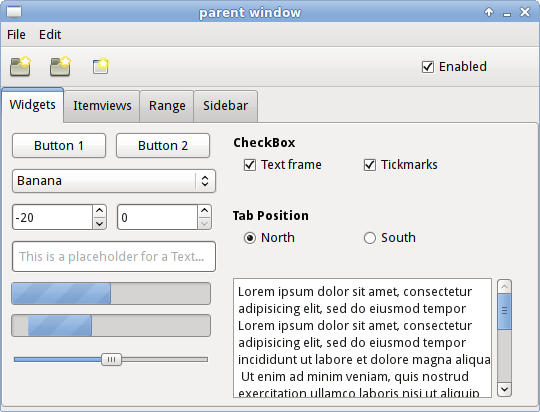

Этот пост участвует в конкурсе
«Умные телефоны за умные посты»

В Сети имеется некоторое количество информации по проекту
PySide, но русскоязычной не так много.
Данная статья является попыткой восполнить этот пробел. Далее будет
описана сборка проекта, запуск приложений на эмуляторе, пример создания
собственной привязки. Некоторые ключевые особенности
PySide будут показаны на примерах.
Введение. Что такое PySide?
PySide — это проект создания привязки
Qt к языку программирования
Python. Он направлен на реализацию поддержки всех возможностей
Qt, в том числе
QtQuick и
QtMobility. На данный момент поддерживаются следующие версии компонент и платформы
| Qt |
4.6, 4.7, 4.8 betta |
| QtMobility |
1.2.0 |
| Python |
2.5, 2.6, 2.7, 3.2 (experemental) |
| OS |
Linux/X11, Maemo 5, MeeGo, Windows, Mac OS X |
Возможности использовать
PySide на Symbian пока нет (или мне
такая возможность не известна), но по заявлению разработчиков работа в
этом направлении ведётся. В качестве альтернативы можете использовать
PyS60, правда к
Qt он никакого отношения не имеет, поэтому далее мы о нём говорить не будем.
Проект
PySide содержит также набор инструментов, которые
позволяют создавать привязки любых библиотек написанных на С/С++.
Подробнее об этих инструментах поговорим далее.
PySide распространяется под лицензией LGPL, т.е. его можно
использовать как в открытых, так и в закрытых, коммерческих проектах.
Исходные коды
PySide открыты и доступны по следующему адресу
github.com/PySide. Так же, если Вы обнаружили какие то проблемы, связанные с
PySide, можете сообщить о них на официальный
баг трекер проекта.
Сборка PySide, проверка работоспособности
На
странице загрузки доступна инструкция по установке
PySide
на различные ОС. Но может так оказаться, что для Вашего Linux
дистрибутива, такой пакет недоступен. Соберем его самостоятельно, что
совсем не сложно, т.к. даже здесь разработчики Qt позаботилась о своих
пользователях, и подготовили набор скриптов, максимально
автоматизирующих действия по сборке
PySide.
Итак, клонируем для начала Git репозиторий со скриптами сборки. Более
нам ничего, пока, не нужно, т.к. по зависимостям будут клонированы все
необходимые проекты.
$ git clone git://github.com/PySide/BuildScripts.git buildscripts
$ cd buildscripts
$ git submodule init
$ git submodule update
У Вас в системе может быть установлено несколько версий
Qt. Чтобы
указать какую именно версию использовать, отредактируйте файл
enviroment.sh, в котором пропишите путь до домашней директории
Qt и путь, куда будет установлен
PySide.
Файл enviroment.sh снабжен подробными комментариями, поэтому трудностей
у Вас не должно возникнуть. Сразу предупреждаю, что с версией
Qt, установленной в системе по умолчанию,
PySide может не собраться. Я рекомендую использовать для сборки последнюю версию QtSdk.
После того как всё настроено, собираем
PySide командой
$ ./build_and_install
Для облегчения работы, файл enviroment.sh легко превращается в сценарий,
при помощи которого запускаются приложения, использующие
PySide. Всё что нужно — это сделать его исполняемым и добавить в конце
python $@.
Что бы проверить работоспособность полученного пакета, клонируем репозиторий с примерами
Qt на
Python, адаптированных для
PySide
$ git clone git://github.com/PySide/Examples.git pyside-examples
и запускаем любой из понравившихся примеров, например Hyper UI

Сейчас у нас готова сборка
PySide под хостовую систему. Но при
разработке может оказаться удобным запускать приложения в симуляторе,
который входит в поставку QtSdk. Соберем
PySide и для нее. Для этого отредактируйте переменную QT_SDK_HOME в файле enviroment.sh, указав в качестве домашней директории
Qt
путь до QtSimulator (${YOUPATH}/QtSDK/Simulator/Qt/gcc). Также
необходимо отредактировать файл build_and_install: к команде запуска
cmake нужно добавить опцию -DQ_WS_SIMULATOR=yes. Эта опция помогает
cmake определить платформу под которую будет происходить компиляция.
Если сейчас запустить сборку, то на данный момент она к сожалению
закончится неудачей, т.к. не сможет собраться модуль QtWebKit. Я создал
отчет
об этой ошибке к которому приложил небольшой патч, который эту проблему
исправляет. Но момент написания статьи, этот баг еще не исправлен.
Поэтому воспользуйтесь этим патчем для полноценной сборки
PySide под QtSimulator (см. вложение к баг-репорту по ссылке выше).

Ничего не мешает нам собрать привязку
QtMobility для QtSimulator. Его сборка ничем не отличается от сборки самого
PySide.
QtMobility
соберётся и даже будет запускать в симуляторе, но не один из модулей
при этом, к сожалению, нельзя назвать рабочим. В полном объеме не
заработал ни один пример поставляемый с самим
QtMobility, ни из пакета
pyside-examples. С причинами этого еще буду разбираться и, возможно, когда-нибудь об этом напишу.

Введение в программирование на PySide. Сигналы и слоты, система свойств
Данный раздел не является введением в язык программирование
Python. Здесь лишь будет показано как использовать некоторые ключевые возможности Qt на
Python.
Сигнал-слот взаимодействие
from PySide import QtCore
def say_hello(name):
print "Hello,", name
class Foo(QtCore.QObject):
@QtCore.Slot(str)
def say_bye(self, name):
print "Bye,", name
class Bar(QtCore.QObject):
signal = QtCore.Signal(tuple)
f = Foo()
b = Bar()
b.signal.connect(say_hello)
b.signal.connect(f.say_bye)
b.signal.emit("User.")
b.signal.emit(1.25)
Signal — это класс, через который происходит управление соединением
сигнала и слота, а так же отправка самого сигнала. Типы передаваемых с
сигналом параметров указываются при его создании. Это может быть любой
тип С и
Python. Если мы хотим отправлять параметры разного типа
(как в примере выше), в качестве типа должен быть указан tuple или list.
Как и раньше, сигнал должен быть объявлен в пределах класса
унаследованного от QObject.
Если нужно создать несколько сигналов, можно воспользоваться следующей формой записи
class Test(QtCore.QObject):
signals = QtCore.Signal((int,), (str,), (float, QtCore.QObject))
Этот код добавит три сигнала с сигнатурами signals(int),
signals(QString) и signals(double,QObject*). Все они содержатся в
переменной signals, который условно можно считать словарем (не
итерабельным). В качестве ключа используются параметры сигнала.
someone.signals.emit(10)
someone.signals[str].emit("Hello everybody!")
someone.signals[float, QtCore.QObject].emit(1.23, obj)
В качестве слота может выступать любой метод класса, не обязательно
унаследованного от QObject, глобальная функция или даже lambda-функция.
Но подобные объекты не являются истинными слотами, в QMetaObject о них
нет никакой информации, поэтому используйте такой подход с
осторожностью. Например, если вы в качестве слота используете глобальную
функцию, то вы не сможете получить в ней информацию о вызывающем
объекте.
Для того чтобы создать истинный слот, нужно воспользоваться декоратором
Slot из модула QtCore. В коде это выглядит следующим образом:
@QtCore.Slot(int)
@QtCore.Slot(str)
def mySlot(value):
print value
Для слотов не действуют правила сигналов по перегрузке и мы не можем
создать слот принимающий любой тип параметров. Для каждого типа
параметра должен быть добавлен отдельный декоратор. Выше приведен пример
слота, который может принимать параметры типа int и QString.
И класс QtCore.Signal и декоратор QtCore.Slot в качестве дополнительных
параметров могут принимать имя под которыми создаваемые сигналы и слоты
будут храниться в метообъектной информации. По умолчанию, если имя не
задано, сигналу назначится имя члена класса которому он присваивается, а
слоту назначается имя декорируемого метода. Слоту также можно задать
тип возвращаемого значения. Использовать подобный функционал можно для
связи
Python и
QML.
Подробнее о взаимодействии
Python и
QML можно почитать на
developer.qt.nokia.com в разделе Python. Так же можно посмотреть примеры
pyside-qml-examples.
Система свойств
Работа со свойствами
Qt мало чем отличается от работы с классическими свойствами
Python. Просто приведу небольшой пример
from PySide import QtCore
class MyObject(QtCore.QObject):
def __init__(self):
QtCore.QObject.__init__(self)
self._x = None
def getx(self):
print "get"
return self._x
def setx(self, val):
print "set"
self._x = val
prop = QtCore.Property(int, getx, setx)
obj = MyObject()
obj.prop = 12345
print obj.prop
Более подробно про работу со свойствами
Qt в
Python можно почитать
здесь.
Создание графического интерфейса с использованием PySide
В пакет
PySide Tools входят стандартные средства Qt для работы с
ресурсами приложений, разработки «классического» графического интерфейса
и локализации приложений. Это pyside-ui, pyside-rcc и pyside-lupdate.
Работа с ними ничем не отличается от тех же самых пакетов для Qt/C++.
Поэтому вы все так же имеете возможность создавать каркас графического
приложения в QtDesigner. Полученная форма компилируется при помощи
pyside-ui, которому в качестве входных параметров нужно указать файл
формы и выходной файл, через опцию -o. У pyside-ui есть также
дополнительная интересная опция -x которая добавляет в получаемый файл
на
Python код запуска приложения. Ниже приведен небольшой пример
запуска приложения использующего форму созданную в дизайнере, ресурсы и
локализацию
from PySide import QtCore, QtGui
from form_ui import *
import resources_rc
if __name__ == "__main__":
import sys
translator = QtCore.QTranslator()
translator.load(':/i18n/translations/ru_RU')
app = QtGui.QApplication(sys.argv)
app.installTranslator(translator)
Form = QtGui.QWidget()
ui = Ui_Form()
ui.setupUi(Form)
Form.show()
sys.exit(app.exec_())
Также в
PySide доступны многие вкусности
Qt последних лет, в том числе QtQuick. Т.е. мы не лишены возможности создавать гибридные приложения с использованием
Python и
QML (QtQuick.Particles, Qt Desktop Components и т.д.).
Пример создания собственной привязки
Зная все выше описанное, мы можем создавать собственные приложения на
Python использующие
Qt,
в том числе использующие QtQuick. Но как быть, если нам понадобится
использовать библиотеку написанную на С/С++ с своем проекте или
использовать свои предыдущие наработки сделанные на том же С/С++? Не
переписывать же все заново на
Python?
К примеру, у нас есть некий проект использующий
Qt Components. Весь основной функционал написан на
QML. Но для его запуска нужен класс
QmlDesktopViewer уже написанный на С++. Нам не составит большого труда переписать его на
Python, но это было бы сейчас не интересно. Давайте сделаем собственную привязку это класса к
Python.
Для этого воспользуемся инструментами из проекта
PySide для создания привязок. Это API Extractor, Shiboken и Generator Runner. Все эти инструменты у нас уже есть.
Что бы создать привязку, нужно для начала создать xml файл, в котором
описывается, какие данные мы ходим экспортировать, скрыть, переименовать
и т.д. В общем то, до чего мы будем получать доступ в полученном модуле
Python.
<?xml version="1.0"?>
<typesystem package="PySide.QmlDesktopViewer">
<load-typesystem name="typesystem_declarative.xml" generate="no" />
<rejection class="*" function-name="x11Event" />
<object-type name="LoggerWidget" />
<object-type name="QmlDesktopViewer" />
</typesystem>
Я специально подробно описал, какие файлы мы получим на выходе
генератора, т.к. именно их предстоит скомпилировать, для получения
модуля
Python. Понимание этого облегчит написание файла проекта
для используемой Вами системы сборки. Для более подробного ознакомления с
правилами составления этого файла, смотрите документацию
API Extractor.
Следующим шагом мы должны создать заголовочный файл языка С++ по
которому будет извлекаться информация о данных, для которых делается
привязка.
#undef QT_NO_STL
#undef QT_NO_STL_WCHAR
#ifndef NULL
#define NULL 0
#endif
#include "pyside_global.h"
#include <loggerwidget.h>
#include <qmldesktopviewer.h>
Файл pyside_global.h мы получили во время сборки
PySide. Можно скопировать его в проект или добавить путь до места его нахождения.
В качестве системы сборки я использую CMake. Я не буду здесь описывать саму сборку. Полный код примера можно взять
здесь. Можете воспользоваться им как примером для создания собственной привязки.
Компилируем проект, и получаем библиотеку с оберткой над нашем классом, которую мы можем использовать в своем приложении на
Python. Воспользуемся полученным модулем для запуска одного из примеров Qt Desktop Components.
from PySide.QtCore import *
from PySide.QtGui import *
from PySide.QmlDesktopViewer import *
if __name__ == "__main__":
import sys
if len(sys.argv) < 2:
print "Usage: qmldesktopviewer <qml file>"
sys.exit()
app = QApplication(sys.argv)
viewer = QmlDesktopViewer()
viewer.open(sys.argv[1])
sys.exit(app.exec_())

Также хочу отметить, что для
PySide уже существует несколько привязок сторонних библиотек. Одна из них — это привязка
Qwt.
Используемые материалы
PySide v1.0.8 documentation
PySide Mobility v0.2.2 documentation
New-style signal/slot
PySide на Developer Network
Running PySide applications on Qt Simulator
PySide Binding Generator
PySide Binding Generation Tutorial